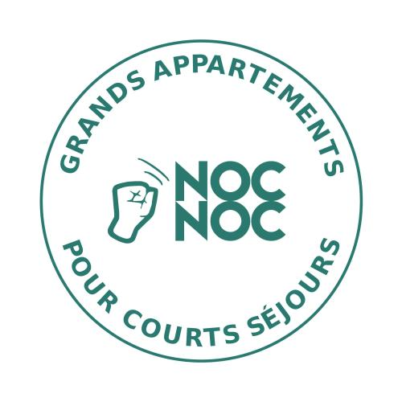
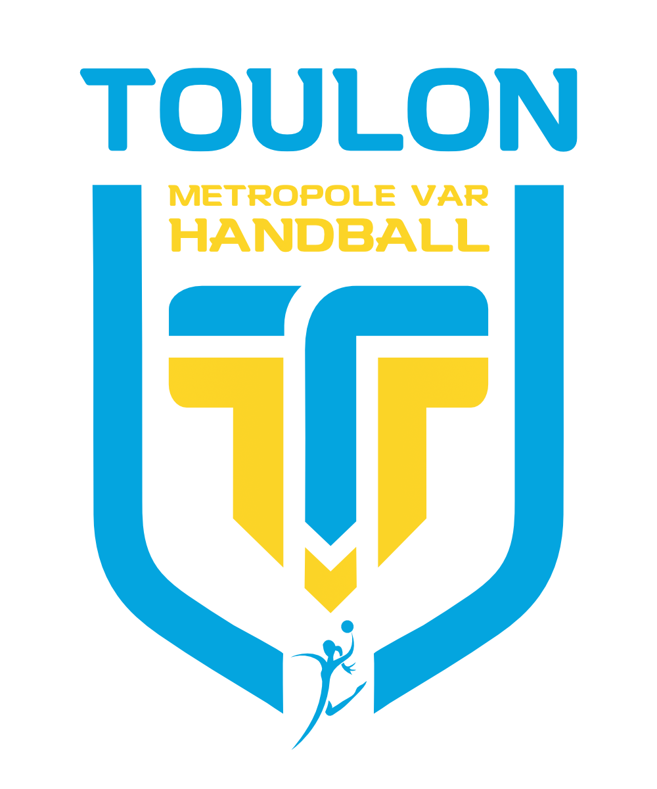
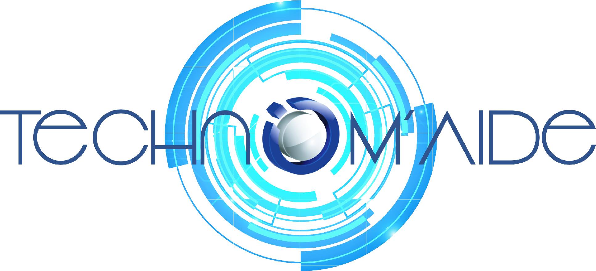

Marina Nguyen

Actuellement étudiante en MS Digital Marketing & Data à Kedge Business School, je suis actuellement à la recherche d'un premier emploie dans le domaine du Web Developpement à partir de Septembre 2023. Rigouse, impliquée et curieuse, je cherche constamment à acquerir et à développer de nouvelles compétences et connaissances.
Comptétences
- Adobe Suite
- SQL
- Office 360
Experience Professionelle
NOCNOC
Executive - Août 2022 à Septembre 2023
- Suivie du portefeuille client
- Mise en place de stratégie de réactivation et de fidélisation client
- Suivie du parcours client de l'élaboration des devis au paiement
Business Developper - Février 2022 à Août 2022
- Prospection de nouveau client et de lead
- Suivie des devis et des paiements
- Création de campagne emailling, phoning et LGM
TMV
Community Manager - Janvier 2020 à Juillet 2020
- Gestion des réseaux sociaux - Instagram, Facebook, Twitter
- Elaboration des planning de publication
- Création de contenu - Post réseaux sociaux, Guides des Partenaires
Technom'Aide
Responsable Partenariat - Novembre 2018 à Janvier 2020
- Elaboration et gestion des partenariats - Microsoft, Oxatis, Le Wagon
- Organisation de Digital Day - journée dedier à la découverte de nouvelles technologie
- Management et formation d'une équipe de 4 personnes
Education
Kedge Business School
MS Marketing Digital & Data - 2022/2023
- Master spécialisé effectué en alternance
IBBA - 2018/2022
- Spécialisation: Digital Marketing
Lycée Saint Joseph Les Maristes
Baccalauréat ES